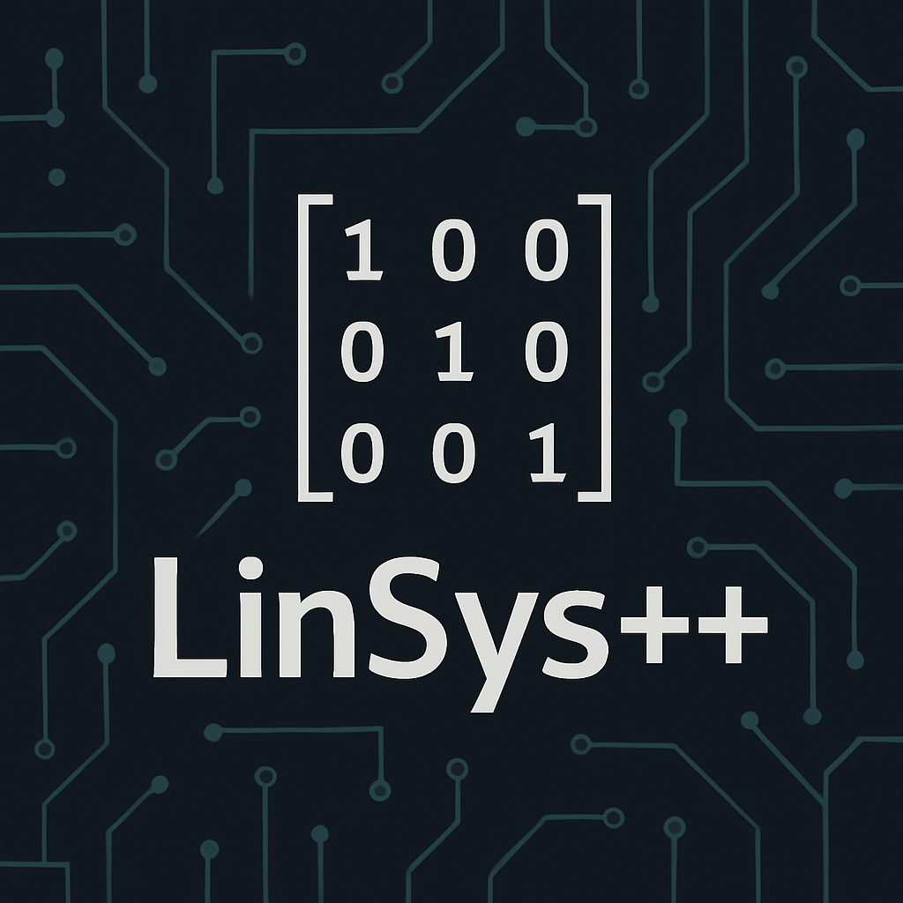
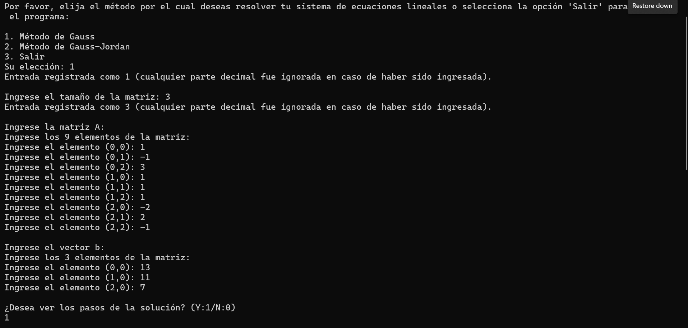
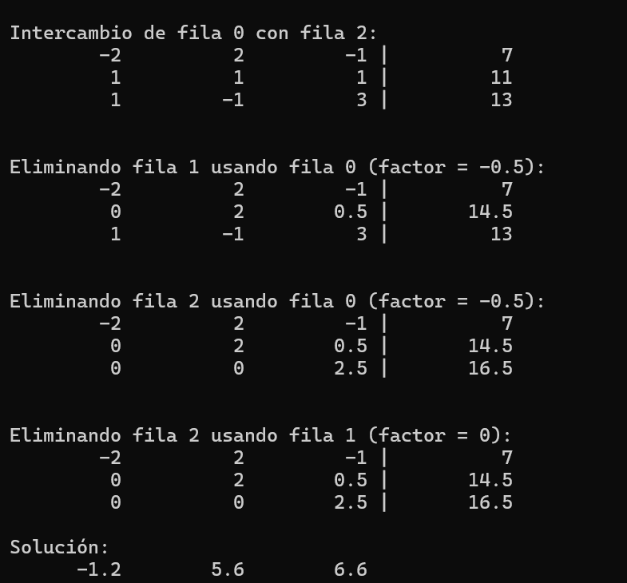

- Generated by
 1.14.0
1.14.0
|
LinSys++
|
Solución de sistemas lineales por Gaus y Gauss-Jordan en C++. Linear system solver using Gaussian methods
Este es un programa de consola en C++ puro que permite resolver sistemas de ecuaciones lineales utilizando los métodos de eliminación de Gauss y eliminación Gauss-Jordan. Diseñado como una herramienta educativa y funcional, es ideal para estudiantes de ingeniería, álgebra lineal o métodos numéricos.

El programa se ejecuta en consola. Al iniciarse, le pedirá:


Esta es la versión de lanzamiento oficial 1.0.0
¡Toda retroalimentación o sugerencia es bienvenida! Puedes hacer un pull request si deseas colaborar
Proyecto licenciado bajo la licencia MIT. Significa que puede ser usado, modificado y distribuido incluso con fines comerciales, siempre que se mantenga el crédito original.
Desarrollado por Sergio Gonzalez – estudiante de ingeniería en electrónica y apasionado por la ciberseguridad. Este proyecto es 100% libre y gratuito. Si te ha ayudado y quieres apoyarme como estudiante, puedes invitarme un café:
O con paypal directamente:
https:://www.paypal.me/CienceMessiah